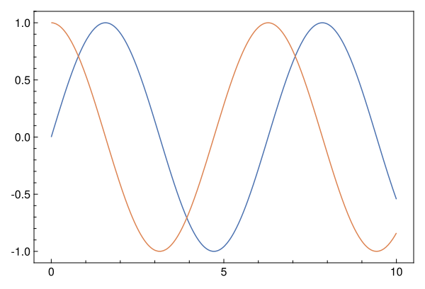
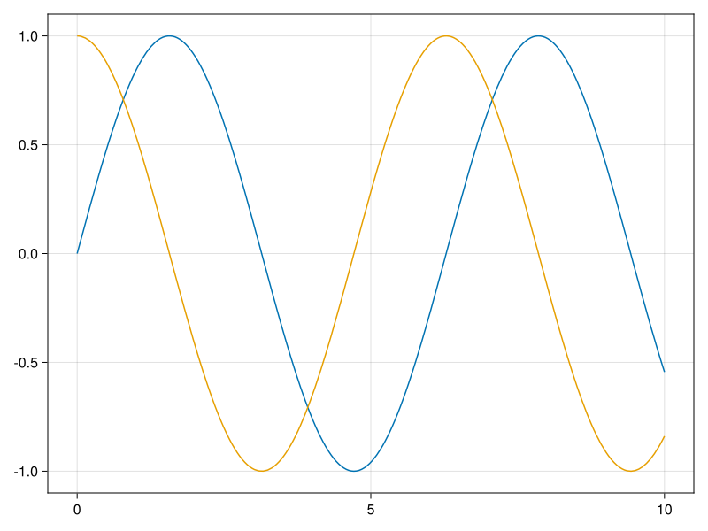
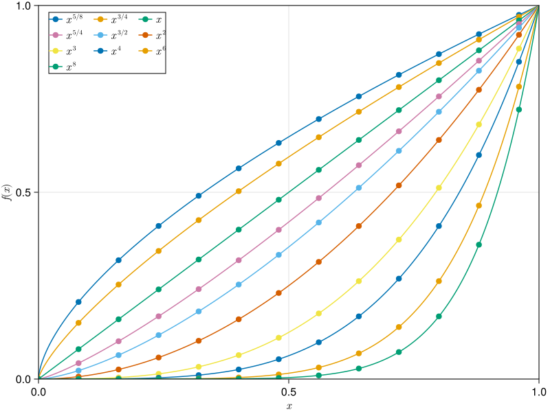
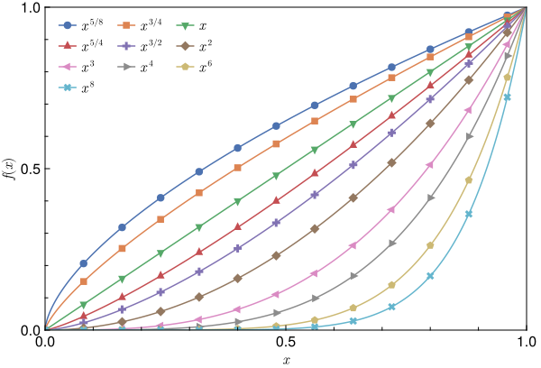
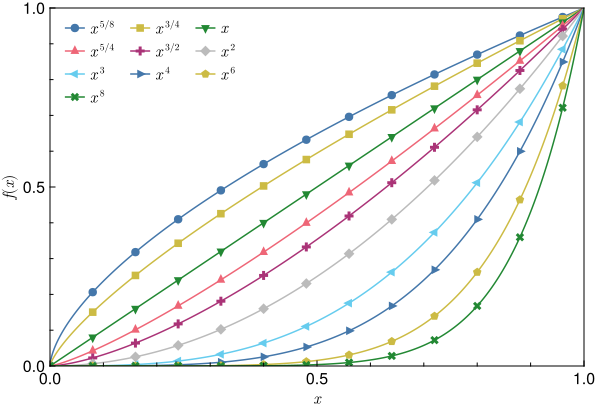
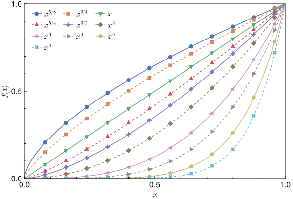
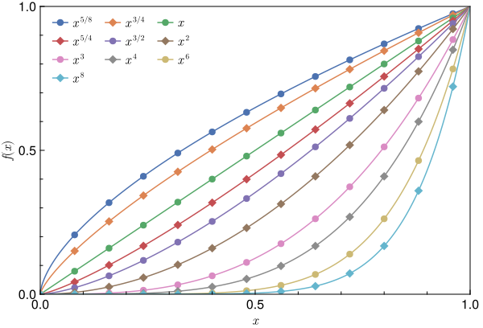
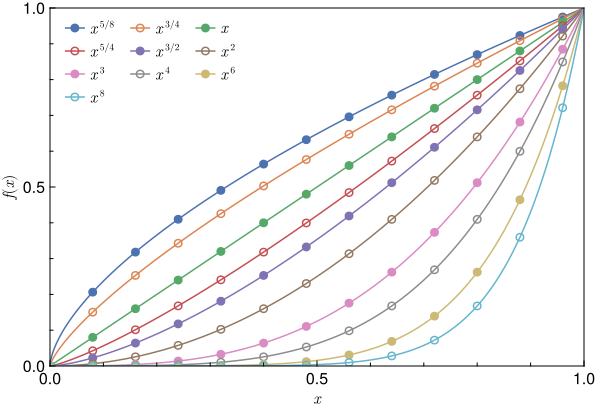
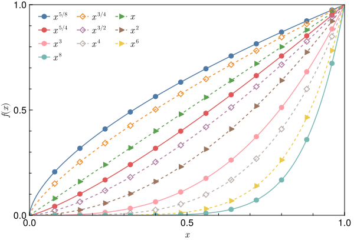

Tutorial
The tutorial as a Pluto notebook is available here
To use MakiePublication, we need to import it together with the CairoMakie.jl package. MakiePublication use CairoMakie since it aims to produce figures for journal publishing which often requires vector graphics in the formats of PDF, EPS, and SVG.
using MakiePublication
using CairoMakieSimple Plots
For simple plots, we can use with_theme block:
with_theme(theme_web()) do
lines(0..10, sin)
lines!(0..10, cos)
current_figure()
endThe output figure is:

As compared to the Makie default theme:

Complicated Plots
with_theme can be also called with a plotting function. The following plotting function demonstrates how to:
- plot fitted lines and data points together
- draw a legend at desired location and its padding, columns.
- tune the padding of a figure with respect to canvas
- tune axis limits
# web theme: figure_padding=(2, 16, 2, 8), legend_margin=((15,0,0,10)
# other themes: figure_padding=(2, 6, 1, 6), legend_margin=((5,0,0,0)
function myplot(; figure_padding=(2,6,1,6), legend_margin=((5,0,0,0)))
x = 0:0.001:1.0
xs = 0:0.08:1.0
fig = Figure(figure_padding=figure_padding)
ax = Axis(fig, xlabel=L"x", ylabel=L"f(x)")
l1 = lines!(ax, x, x.^(5/8), label=L"x^{5/8}")
s1 = scatter!(ax, xs, xs.^(5/8))
l2 = lines!(ax, x, x.^(3/4), label=L"x^{3/4}")
s2 = scatter!(ax, xs, xs.^(3/4))
l3 = lines!(ax, x, x, label=L"x")
s3 = scatter!(ax, xs, xs)
l4 = lines!(ax, x, x.^(5/4), label=L"x^{5/4}")
s4 = scatter!(ax, xs, xs.^(5/4))
l5 = lines!(ax, x, x.^(3/2), label=L"x^{3/2}")
s5 = scatter!(ax, xs, xs.^(3/2))
l6 = lines!(ax, x, x.^2, label=L"x^2")
s6 = scatter!(ax, xs, xs.^2)
l7 = lines!(ax, x, x.^3, label=L"x^3")
s7 = scatter!(ax, xs, xs.^3)
l8 = lines!(ax, x, x.^4, label=L"x^4")
s8 = scatter!(ax, xs, xs.^4)
l9 = lines!(ax, x, x.^6, label=L"x^6")
s9 = scatter!(ax, xs, xs.^6)
l10 = lines!(ax, x, x.^8, label=L"x^8")
s10 = scatter!(ax, xs, xs.^8)
xlims!(0, 1)
ylims!(0, 1)
axislegend(ax, [[l1, s1], [l2, s2], [l3, s3], [l4, s4], [l5, s5], [l6, s6], [l7, s7], [l8, s8], [l9, s9], [l10, s10]],
[L"x^{5/8}", L"x^{3/4}", L"x", L"x^{5/4}", L"x^{3/2}", L"x^2", L"x^3", L"x^4", L"x^6", L"x^8"], nbanks=3, position=:lt, margin=legend_margin, padding=(0,0,0,0))
fig[1,1] = ax
return fig
end
myplot_web() = myplot(figure_padding=(2, 16, 2, 8), legend_margin=(15,0,0,10))Applying CairoMakie default theme with following code
myplot_web()which produces

Theming it by MakiePublication web theme with following code
with_theme(myplot_web, theme_web())which produces

Notable changes are:
- Resolution and figure aspect ratio
- Color palette from
Makie.wong_colorstoseaborn_deep - Frameless figure legend
- Visible minor ticks
- Marker size
- Spine width
- Label font size
Color Palettes
MakiePublication has 15 built-in color palettes. We can choose a color palette from the array MakiePublication.COLORS and use it like this:
with_theme(myplot_web, theme_web(colors=MakiePublication.COLORS[5]))Note we arrange the order of the color palettes in COLORS by how strongly we recommend it. The first is the most recommended color palette which is the MakiePublication default, i.e. seaborn_deep.
Or obtain the color palette by calling a function:
with_theme(myplot_web, theme_web(colors=MakiePublication.tol_bright()))The resulted figure is

Line Styles
By default, the line styles are given by MakiePublication.LINESTYLES. You can overwrite it with linestyles keyword of theme_* methods.
Moreover, the default cycle for Line plots does not cycle line styles. To cycle line styles, you have to pass a proper cycle using either cycle or linecycle keyword argument. See the example below:
lc = Cycle([:color, :linestyle], covary=true)
# Only solid and dashed line styles are cycled.
with_theme(myplot_web, theme_web(linecycle=lc, linestyles=[nothing, :dash]))which produces

Markers
By default, the markers are given by MakiePublication.MARKERS. You can overwrite it with markers keyword of theme_* methods.
# Only circle and diamond markers are cycled.
with_theme(myplot_web, theme_web(markers=[:circle, :diamond]))which produces

Hollow Markers
MakiePublicaion supports drawing hollow markers by using transparent color for marker face and drawing strokes only.
To draw hollow markers, we have to explicitly define a marker cycle including both :color=>:markercolor and :strokecolor=>:color, e.g.
Cycle([:color=>:markercolor, :strokecolor=>:color])Moreover, we have to define a list of true or false values which indicates the ordering of whether the marker is hollow, and pass it to the ishollowmarkers keyword argument. For example,
[false, true]It will make every second marker hollow.
You can also change the stroke width by passing the value to the makerstrokewidth keyword argument.
A full example is:
sc = Cycle([:color=>:markercolor, :strokecolor=>:color], covary=true)
with_theme(myplot_web, theme_web(scattercycle=sc, ishollowmarkers=[false, true], markerstrokewidth=1.5))which produces

Cyclers
Cycler is extremely powerful. Using it properly can produce very complicated figures. See the example below:
lc = Cycle([:color, :linestyle], covary=true)
sc = Cycle([:color=>:markercolor, :strokecolor=>:color, :marker], covary=true)
with_theme(myplot_web,
theme_web(
colors=MakiePublication.tableau_10(),
linestyles=[nothing, :dash, :dash],
ishollowmarkers=[false, true, false],
markers=[:circle, :diamond, :rtriangle],
linecycle=lc,
scattercycle=sc,
markerstrokewidth=1.5)
)which produces

Saving A Figure As An Image File
There are two ways to save a figure as an image file.
- Use
savefig. Provide a file path with desired extension, such aspdf,eps,svg,png, etc., such as
fig = with_theme(myplot, theme_acs())
savefig("plot.svg", fig)For web display, we recommend use svg format for the image file.
- Use
save. The image size can be further customized with keywordpx_per_unit, whose default value is 1. Increasing it will increase the resolution as well as the image size.
fig_web = with_theme(myplot_web, theme_web())
save("plot_web.png", fig_web, px_per_unit=4)